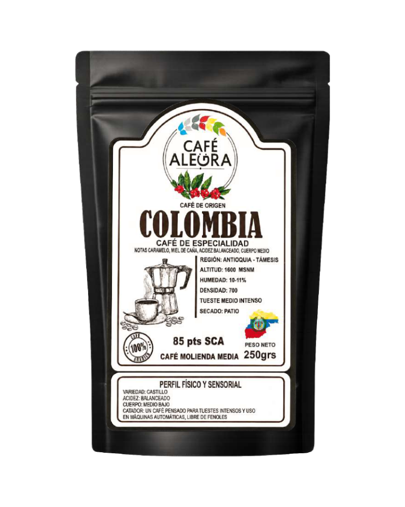

Inicio Café de especialidad Colombia
CAFÉ DE ESPECIALIDAD · ORIGEN ÚNICO (+84 SCA)Café de Especialidad Colombia
Dos expresiones de altura de Colombia: nuestra selección de origen Castillo (85 SCA) y nuestro microlote especial de Huila (86 SCA).

Café de Especialidad · Colombia (Castillo, 85 SCA)
Un café de carácter envolvente, con notas dulces de caramelo y miel de caña que aportan calidez y suavidad a cada taza. Su cuerpo medio, acidez balanceada y tueste medio intenso ofrecen una experiencia armoniosa, de sabor definido y agradable persistencia.
Tueste: Medio intenso
Información técnica
| Varietal | Castillo |
|---|---|
| Notas | Caramelo, miel de caña |
| Altura | 1.600 msnm |
| Tueste | Medio intenso |
| Proceso | Lavado |
| Acidez | Balanceada |
| Cuerpo | Medio |
| Formato | 250 g |
| Precio | $13.000 |
| Puntaje SCA | 85 puntos |
Cómo prepararlo
Ideal en prensa francesa o métodos de filtrado.
Envíos
Despachos a todo Chile mediante Blue Express. Las tarifas de envío se calculan según región y comuna en el checkout. No aplica despacho gratuito.
Microlote Colombia · Huila (86 SCA)
Un café de altura que destaca por su dulzor, su acidez brillante y su cuerpo redondo. Sus notas de caña de azúcar, chocolate de leche y mandarina ofrecen una experiencia de taza fresca, armoniosa y llena de matices.
Tueste: Medio claro
Información técnica del lote actual
| Origen del lote | Huila, Colombia |
|---|---|
| Varietal | Blend de Caturra y Colombia |
| Notas | Caña de azúcar, chocolate de leche, mandarina |
| Puntaje en taza | 86 puntos SCA |
| Altitud | 1.700–1.800 msnm |
| Tueste | Medio claro |
| Proceso | Lavado |
| Acidez | Brillante (media-alta) |
| Cuerpo | Redondo |
| Formato | 250 g |
| Precio | $13.000 |
Cómo prepararlo
Ideal en prensa francesa o métodos de filtrado.
Envíos
Despachos a todo Chile mediante Blue Express. Las tarifas de envío se calculan según región y comuna en el checkout. No aplica despacho gratuito.